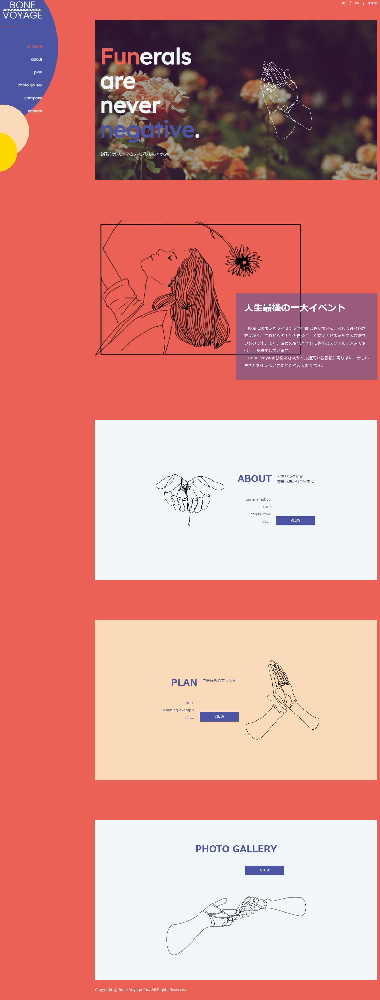
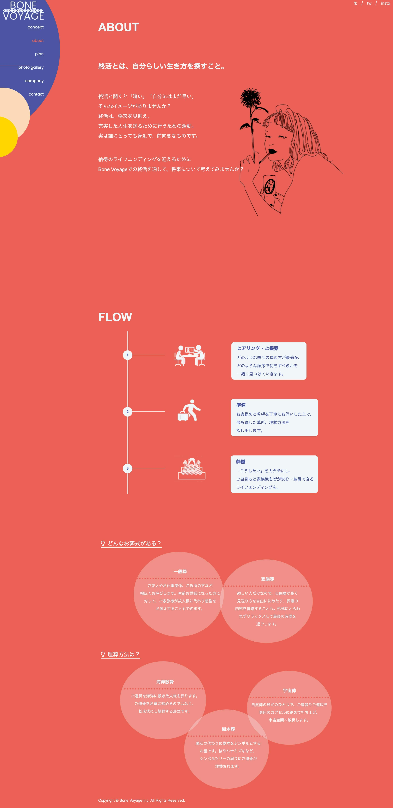
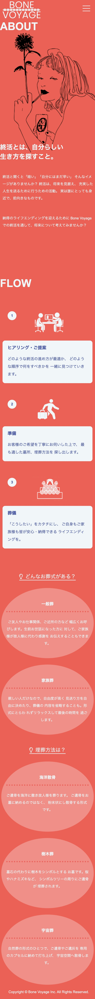
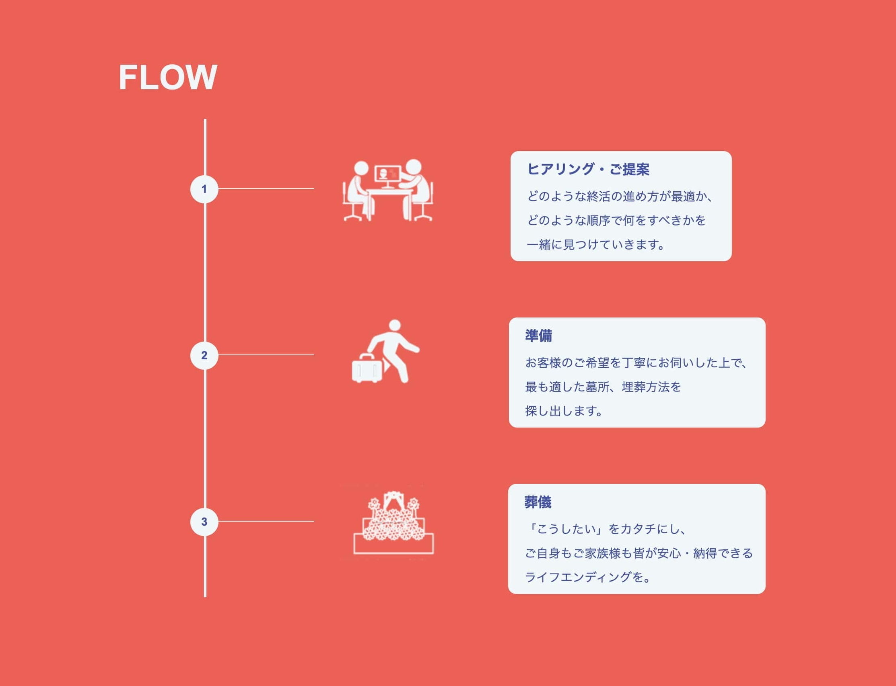
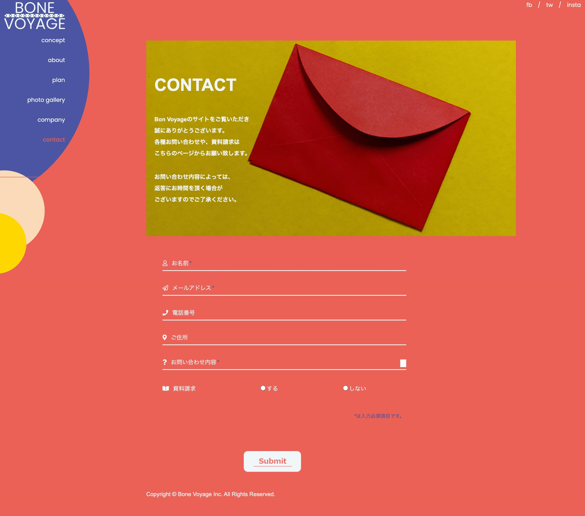
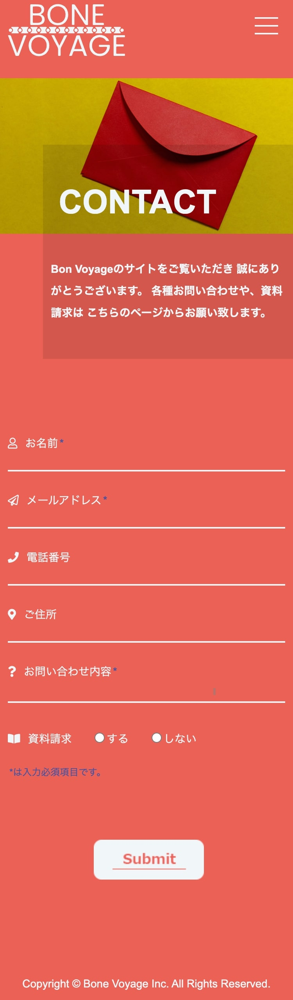
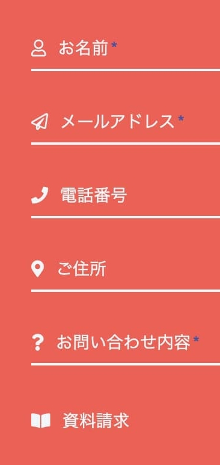

Bone Voyage（架空）
コーポレートサイト（グループ制作）

グループ制作の授業で、終活事業を展開する企業のコーポレートサイト制作依頼を頂きました。
終活のネガティブなイメージを変えるサイトにして欲しいとのことで、
明るい印象のコーポレートサイトを意識し、制作しました。
担当
デザイン（PC・スマホ）/ コーディング（レスポンシブ含む）
担当ページ
about/contact
期間
1ヶ月
使用アプリ
Illustrator
サイトの目的
企業の認知
業界イメージの刷新
ターゲット
終活に関心があるが、一歩踏み出せないという方
20代の若年層
ペルソナ
年齢・性別：20代女性
居住地：神奈川県
参考：おしゃれが好きで、独自のセンスを大切にしています。
自分の考えや信念を強く持っており、人生を悔いなく生きていきたいという想いがあります。
コメント
終活に対する"暗そう""ネガティブ"というイメージを払拭したい、 若い人に関心を持ってもらいたいということで、 おしゃれな雰囲気を持つイラストを多く使用しています。
文章に関しても、ユーザーの共感を得られるような文言（終活と聞くと「暗い」「自分にはまだ早い」 そんなイメージがありませんか？など）を置くことでまずは心を掴み、 ページに留まってもらうことを意識しました。
aboutページ
パソコン

スマートフォン

ポイント

ピクトグラムを用いたり、線を使ってフローを表現することで、明るい印象作りに努めました。 また、ページ全体の雰囲気と合わせるために、ピクトグラムの色を白色に変更しました。
contactページ
パソコン

スマートフォン

ポイント

各項目の頭にアイコンを入れることで、分かりやすさや、単調にならないようにということを意識しました。